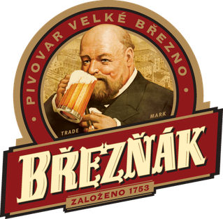

체코 맥주 브랜드 13
체코에서 시작된 맥주 브랜드 13개를 로고와 함께 정리했습니다. 대표적인 체코 맥주 브랜드로는 필스너 우르켈(Pilsner Urquell), 부데요비츠키 부드바르(Budweiser Budvar), 벨코포포빅키 코젤(Velkopopovický Kozel), Svijany Brewery, Holba Brewery, Royal Brewery of Krušovice 등이 있습니다. 기원 국가는 검수된 브랜드 설명이나 위키데이터 개체에서 확인된 값만 씁니다.
다른 나라 맥주 브랜드
맥주 브랜드 전체 →설립연도가 확인된 브랜드는 9개이며 가장 오래된 곳은 1842년, 가장 최근은 2000년에 시작했습니다. 시기별로는 1900년 이전 7개, 1950~1999년 1개, 2000년 이후 1개입니다. 수록 자료로는 로고 이미지 13개를 갖췄습니다. 이 가운데 13개는 공식 웹사이트가 일치하는 위키데이터 개체로 연결해 두었습니다.
체코 맥주 브랜드 한눈에 보기
- 필스너 우르켈(Pilsner Urquell) — 필스너 우르켈(Pilsner Urquell)은 체코 플젠에서 양조하는 라거 맥주이다.
- 부데요비츠키 부드바르(Budweiser Budvar) — 부데요비츠키 부드바르(Budweiser Budvar)는 체코 체스케부데요비체에 있는 국영 양조장이다.
- 벨코포포빅키 코젤(Velkopopovický Kozel) — 벨코포포빅키 코젤(Velkopopovický Kozel)은 1874년부터 생산된 체코 맥주이다.
- Svijany Brewery — Svijany Brewery는 체코 Svijany에 있는 양조장이다.
- Holba Brewery — Holba Brewery는 체코 Hanušovice에 있는 맥주 양조장이다.
- Royal Brewery of Krušovice — Royal Brewery of Krušovice는 체코 Krušovice에 본사를 둔 맥주 양조장이다.
- Starobrno Brewery — Starobrno Brewery는 체코 브르노에 있는 맥주 양조장이다.
- Family Brewery Bernard — Family Brewery Bernard는 체코 Humpolec에 있는 양조장이다.
- Pivovar Broumov — Pivovar Broumov는 체코 동보헤미아의 Broumov, Olivětín에 있는 소규모 맥주 양조장이다.
- Pivovar Polička — Pivovar Polička는 체코 Polička에 있는 전통 도시 양조장으로, 1517년에 설립되었다.
- Plzeňský Prazdroj — Plzeňský Prazdroj는 1842년 보헤미아의 플젠에서 문을 연 체코의 양조회사이다.
- Pivovar Ostravar — Pivovar Ostravar는 체코 도시 오스트라바에 있는 체코의 양조장이다.
체코 맥주 브랜드 목록
 필스너 우르켈Pilsner Urquell체코 · 1842년
필스너 우르켈Pilsner Urquell체코 · 1842년필스너 우르켈(Pilsner Urquell)은 체코 플젠에서 양조하는 라거 맥주이다.
부데요비츠키 부드바르Budweiser Budvar체코 · 1895년부데요비츠키 부드바르(Budweiser Budvar)는 체코 체스케부데요비체에 있는 국영 양조장이다.
 벨코포포빅키 코젤Velkopopovický Kozel체코 · 1874년
벨코포포빅키 코젤Velkopopovický Kozel체코 · 1874년벨코포포빅키 코젤(Velkopopovický Kozel)은 1874년부터 생산된 체코 맥주이다.
 Svijany Brewery체코
Svijany Brewery체코Svijany Brewery는 체코 Svijany에 있는 양조장이다.
 Holba Brewery체코 · 1874년
Holba Brewery체코 · 1874년Holba Brewery는 체코 Hanušovice에 있는 맥주 양조장이다.
 Royal Brewery of Krušovice체코
Royal Brewery of Krušovice체코Royal Brewery of Krušovice는 체코 Krušovice에 본사를 둔 맥주 양조장이다.
 Starobrno Brewery체코 · 1872년
Starobrno Brewery체코 · 1872년Starobrno Brewery는 체코 브르노에 있는 맥주 양조장이다.
 Family Brewery Bernard체코 · 2000년
Family Brewery Bernard체코 · 2000년Family Brewery Bernard는 체코 Humpolec에 있는 양조장이다.
 Pivovar Broumov체코 · 1997년
Pivovar Broumov체코 · 1997년Pivovar Broumov는 체코 동보헤미아의 Broumov, Olivětín에 있는 소규모 맥주 양조장이다.
 Pivovar Polička체코
Pivovar Polička체코Pivovar Polička는 체코 Polička에 있는 전통 도시 양조장으로, 1517년에 설립되었다.
 Plzeňský Prazdroj체코 · 1842년
Plzeňský Prazdroj체코 · 1842년Plzeňský Prazdroj는 1842년 보헤미아의 플젠에서 문을 연 체코의 양조회사이다.
 Pivovar Ostravar체코 · 1897년
Pivovar Ostravar체코 · 1897년Pivovar Ostravar는 체코 도시 오스트라바에 있는 체코의 양조장이다.

Březňák체코Březňák은 체코의 Ústí nad Labem 인근 Velké Březno에서 생산되는 필스너 계열 맥주 브랜드이다.